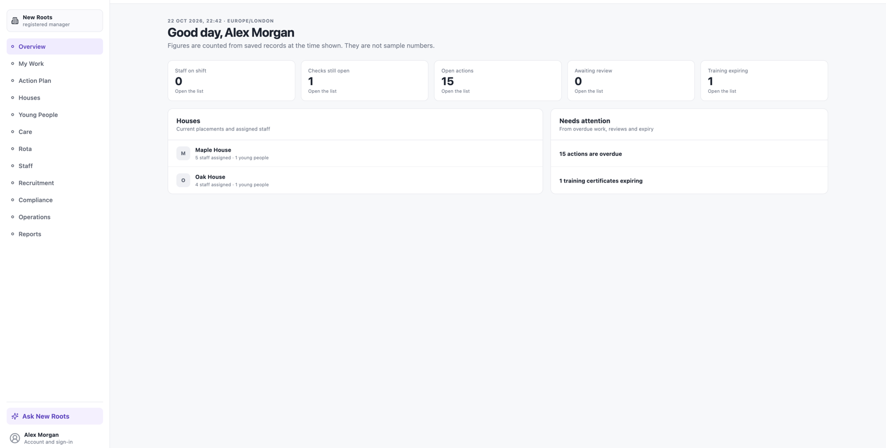
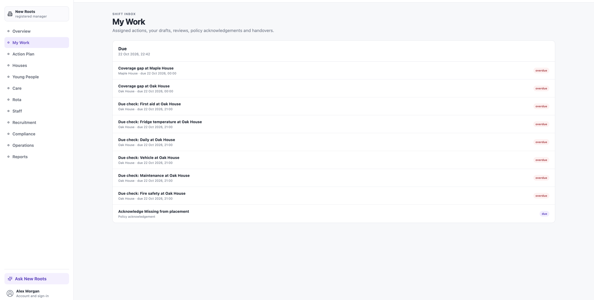
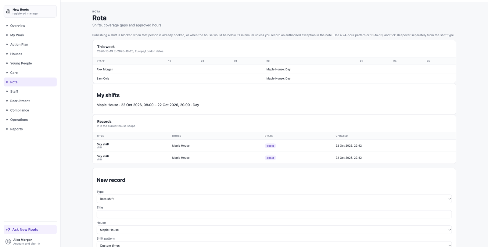
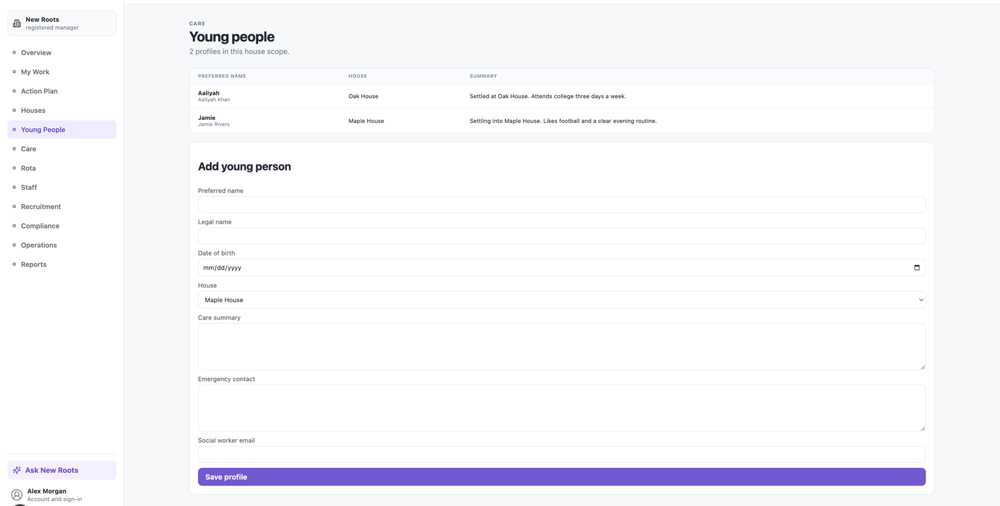
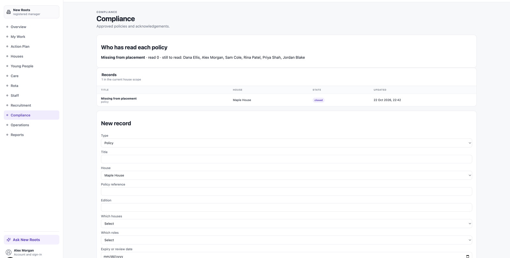
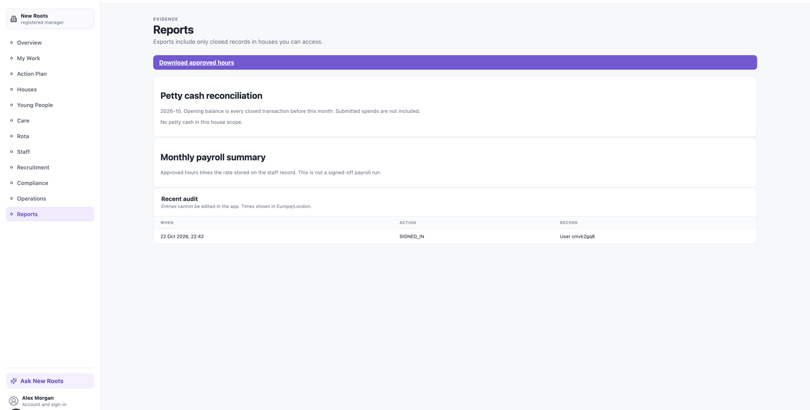

New Roots Care OS
Shift inbox, rota, checks, and audit trail for a UK children’s residential care provider. Next.js · Postgres · Prisma.
Screens from the demo seed. No real people or records.

Overview 
My Work — the shift inbox 
Rota 
Young people 
Compliance 
Reports and audit log